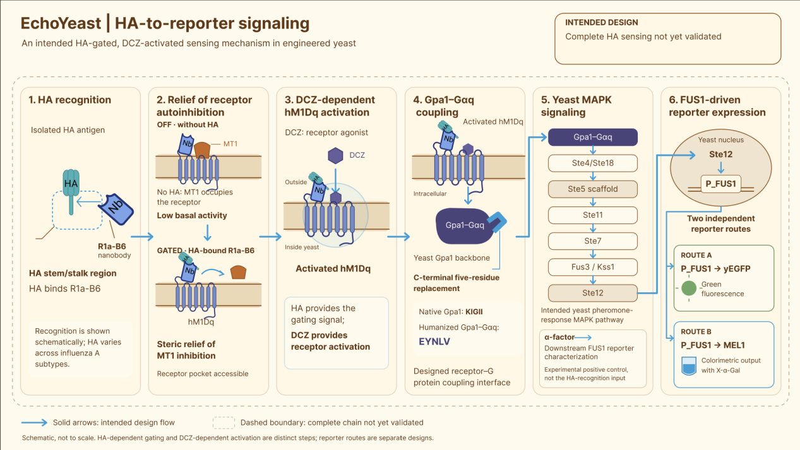
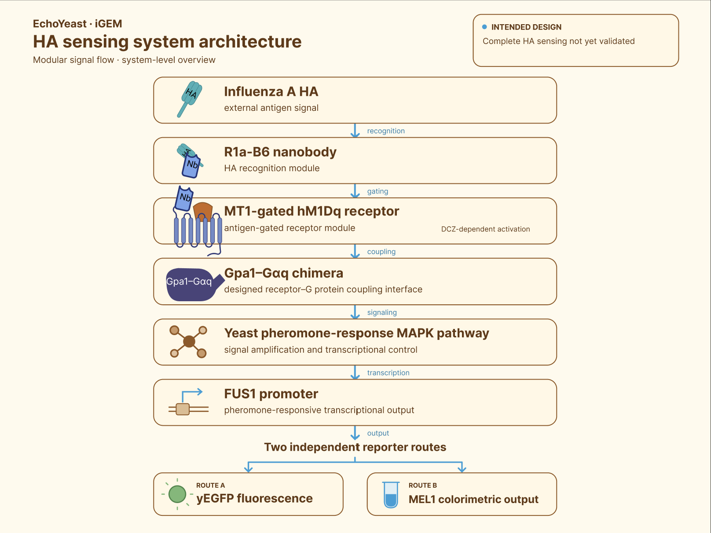
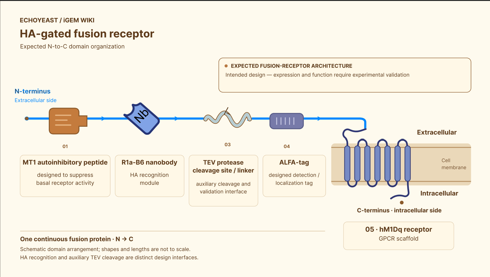

EchoYeast: Let Yeast Respond to Influenza Signals
An engineered yeast biosensor for influenza A hemagglutinin recognition and environmental surveillance
Can a living cell transform an invisible antigen-recognition event into a readable response?
Abstract
Seasonal influenza remains a global public-health challenge. The World Health Organization estimates that seasonal influenza causes approximately one billion cases, three to five million severe cases and 290,000–650,000 respiratory deaths worldwide each year. Influenza A and influenza B viruses both contribute to seasonal epidemics, while currently circulating human influenza A viruses include A(H1N1)pdm09 and A(H3N2). Most established influenza testing workflows are designed around clinical or laboratory samples collected from individuals. [1]
EchoYeast explores a complementary question: can an engineered living cell recognize influenza A hemagglutinin (HA) and convert that recognition event into a measurable biological output?
EchoYeast uses Saccharomyces cerevisiae BY4741 as an engineered chassis. The project combines an HA-recognizing nanobody, an antigen-gated GPCR-inspired receptor, a humanized G-protein coupling interface, the yeast pheromone-response MAPK pathway and a FUS1-driven reporter system. Team Design

Our current work supports the characterization of the downstream FUS1 reporter system and the construction of several chassis-engineering modules, while full-length receptor expression, HA-dependent activation and integration with air sampling remain to be demonstrated. Team Results
Therefore, EchoYeast is currently an engineering exploration of a modular living-cell biosensor, rather than a clinically validated diagnostic device or a field-deployed airborne influenza detector.
Why EchoYeast?
Why influenza?
A recurring global health challenge
Seasonal influenza affects populations worldwide and causes substantial morbidity and mortality every year. People at increased risk of severe influenza complications include older adults, young children, pregnant individuals, people with chronic diseases and people with weakened immune systems. Influenza outbreaks can also produce school absenteeism, work absenteeism and pressure on healthcare services. [1]
For schools, hospitals, nursing institutions, dormitories and other shared indoor environments, we ask whether environmental information could complement individual-centered surveillance.
This does not mean replacing clinical diagnosis, vaccination or established laboratory testing. It means exploring whether a shared environment can provide an additional source of information about respiratory-virus risk.
A global policy context
The WHO Global Influenza Strategy 2019–2030 provides a framework for strengthening seasonal influenza prevention and control and preparing for future influenza pandemics. The strategy emphasizes stronger national capacities and the development of improved tools for influenza prevention, detection, control and treatment. [2]
United Nations Sustainable Development Goal Target 3.d calls for strengthening the capacity of countries, particularly developing countries, for early warning, risk reduction and management of national and global health risks. [3]
China’s 2024 guidance on an intelligent multi-point infectious-disease surveillance and early-warning system also calls for multiple surveillance channels, including environmental risk-factor monitoring, together with stronger risk assessment and early-warning coordination. [4]
These global and national frameworks provide the public-health context for our project, but they do not endorse EchoYeast or establish its technical performance.
Why consider air and exhaled breath?
Influenza-related signals can be found in exhaled particles
Respiratory particles can contain influenza-related material. Yan and colleagues detected influenza viral RNA in fine and coarse aerosol fractions collected from symptomatic seasonal influenza cases. In their study, infectious virus was recovered from a proportion of validly cultured fine-aerosol samples. The study also found that coughing and sneezing were not necessary for the generation of infectious aerosols. [5]
These findings support the importance of studying respiratory aerosols, but they do not prove that any environmental biosensor can provide presymptomatic diagnosis.
Airborne-virus detection is an integrated engineering problem
Airborne-virus detection is affected by particle size, sampling efficiency, target concentration, sample recovery and the preservation of detectable material. A sampler may process a large volume of air while collecting only a small amount of target material into the receiving liquid. [6]
The performance of the complete system therefore depends on more than molecular recognition.
For EchoYeast, an integrated workflow must answer four questions:
- Can the target be collected from air or exhaled breath?
- Does the collected material remain recognizable?
- Can molecular recognition be transmitted into the engineered yeast pathway?
- Can the final output be distinguished from background and nonspecific responses?
We regard sampling, recognition, signal processing and readout as one connected engineering chain.
Existing airborne-virus technologies
Airborne-virus monitoring is already an active research field. Li and colleagues developed an integrated aerosol-monitoring platform that detected multiple respiratory viruses, including influenza A, using aerosol sampling and microfluidic nucleic-acid detection. This work demonstrates the potential of integrated environmental surveillance while also illustrating the importance of sensitivity, sample enrichment, automation and field deployment. [8]
EchoYeast does not claim to outperform nucleic-acid-based systems. Instead, it explores whether an engineered living cell can provide a different route for antigen recognition and signal amplification
Why engineer yeast?
Existing detection methods and a different design space
Influenza can be detected using methods including nucleic-acid testing, antigen detection and virus isolation. [1]
A systematic review and meta-analysis found that digital immunoassays and rapid nucleic-acid amplification tests generally showed higher pooled sensitivity than traditional rapid influenza diagnostic tests, while specificity was generally high across the evaluated categories. [7]
These methods are valuable, but they are generally designed around prepared samples and dedicated testing workflows.
EchoYeast explores a different design space in which recognition and signal processing are encoded within a living cell.
The intended advantages of this design are modularity, genetic programmability and the possibility of connecting recognition to intracellular amplification.
These are design goals rather than experimentally demonstrated advantages over existing diagnostic technologies.
Yeast as a signal-processing chassis
Yeast contains a native GPCR–G-protein–MAPK signaling architecture that can be connected to heterologous receptors. Previous work has shown that yeast GPCR signaling can be engineered and tuned to generate measurable responses to selected extracellular stimuli. [9]
We selected S. cerevisiae BY4741 as the chassis for EchoYeast and designed a modular system containing recognition, gating, signal coupling and reporter-output layers. Team Design
The central principle is:
The recognition event is converted into a cellular signaling event, and the cellular signaling event is converted into a reporter output.
Our design
System architecture
EchoYeast contains five connected engineering modules:
- HA recognition module
- Antigen-gated receptor module
- G-protein coupling module
- Chassis-engineering module
- Reporter-output module
The intended architecture is shown below:

This architecture is a design model. Each connection requires independent experimental validation. Team Design Team Results
Module 1: HA recognition
Why target the HA stem region?
Influenza HA contains a relatively variable globular head and a more conserved membrane-proximal stem region. Gaiotto and Hufton used yeast display and deep mutational scanning to investigate cross-neutralizing nanobodies that bind a conserved pocket in the HA2 stem region. [10]
The HA stem therefore provides a literature-supported starting point for exploring recognition that is not restricted to a single highly variable head epitope.
Why use R1a-B6?
Hufton and colleagues characterized R1a-B6 among a group of single-domain antibodies with cross-subtype neutralization activity in their experimental system. Their study also showed that antibody valency could alter neutralization potency against some influenza subtypes. [11]
We use R1a-B6 as a literature-informed HA stem-region recognition element for an H1N1 prototype design. Team Design
We do not describe R1a-B6 as an H1N1-exclusive nanobody or as a universal detector for all influenza A subtypes. [10] [11]
Our computational pipeline prioritized R1aB6 from a group of candidate nanobody sequences for further experimental consideration. Team Model
Computational prioritization does not prove that the final fusion receptor is correctly expressed, localized to the membrane or able to retain antigen-binding activity.
The recognition module must therefore be validated at several levels:
- sequence integrity;
- protein folding;
- antigen binding;
- accessibility within the fusion receptor;
- antigen-dependent effects on receptor state.
Module 2: antigen-gated receptor design
PAGER-inspired logic
PAGERs are programmable antigen-gated engineered GPCRs designed to connect antigen recognition with receptor activation. Their central mechanism uses a conditional autoinhibitory domain that suppresses receptor activity until antigen binding relieves the inhibition. [12]
EchoYeast adapts this logic to an engineered yeast chassis and uses an HA-recognition nanobody in the receptor design. Team Design
Our intended receptor architecture is:

The exact behavior of this architecture must be tested experimentally because a domain that functions in one host or scaffold may not function identically after transplantation into another system.
The roles of HA and DCZ
In the intended OFF state, MT1 is designed to maintain hM1Dq in a low-activity state in the absence of HA. Team Design
In the intended ON state, HA binding to R1a-B6 is expected to relieve MT1-mediated autoinhibition through a steric mechanism. DCZ then provides the small-molecule agonist input required to activate the de-repressed hM1Dq receptor. [12]
Therefore:
HA is designed to control receptor gating, while DCZ provides receptor activation.
HA is not intended to function as the direct small-molecule agonist of hM1Dq.
The TEV cleavage site is included as an auxiliary positive-control element for testing whether removal of the inhibitory region can restore downstream activity. Team Design
A TEV-induced response would not prove that HA gating works. It would only help distinguish downstream pathway failure from receptor-gating failure.
Module 3: G-protein coupling
Why humanize Gpa1?
The coupling specificity of a GPCR is influenced by the C-terminal region of the Gα subunit. [13]
Brown and colleagues showed that replacing the final five residues of yeast Gpa1 with mammalian Gα sequences could improve the coupling of heterologous receptors to the yeast mating pathway. [14]
Based on this principle, we designed a Gpa1–Gαq chimera in which the yeast Gpa1 C-terminal sequence is changed from KIGII to the human Gαq-derived sequence EYNLV. Team Design
The intended purpose is to create a receptor-recognition interface while retaining the yeast Gpa1 backbone and downstream yeast signaling context.
Gpa1–Gαq chimera construction and characterization
We constructed the Gpa1-humanization template by assembling GPA1 homology arms and the URA3 selection marker, followed by yeast transformation and colony-PCR screening. Sanger sequencing confirmed that clones 12 and 17 matched the expected sequence in the target replacement region. Both strains showed reduced α-factor-induced shmoo formation and growth inhibition, while maintaining normal proliferation. When tested with the FUS1–yEGFP reporter, the humanized strains displayed strongly attenuated α-factor-induced fluorescence, indicating that Gpa1 humanization effectively suppressed the native α-factor–MAPK–FUS1 response and reduced potential background activation. Direct coupling between the humanized Gpa1 chimera and hM1Dq in the complete receptor system remains to be validated. Team Results
Module 4: chassis engineering
FAR1 and cell-cycle arrest
Yeast pheromone signaling can induce G1-phase cell-cycle arrest, and FAR1 connects pheromone signaling with cell-cycle regulation. [15]
We designed FAR1 disruption to reduce the growth-arrest component of the native mating response and to explore a chassis more suitable for sustained sensor operation. Team Design
SST2 and negative regulation
SST2 is a major negative regulator of Gpa1-mediated pheromone signaling in S. cerevisiae. SST2 deletion can increase pheromone sensitivity, but it may also alter background signaling and the relationship between cell growth and reporter output. [16]
We therefore treated SST2 disruption as a signal-regulation hypothesis rather than assuming that increased signal intensity automatically represents improved sensing performance.
What our chassis data show
Our project introduced four-base-pair deletions into the targeted FAR1 and SST2 loci and used colony PCR and Sanger sequencing for verification. Under the reported α-factor conditions, the FAR1 knockout strain showed reduced growth inhibition compared with the parental strain. The FAR1/SST2 double-knockout strain showed altered growth and total-fluorescence behavior under several α-factor concentrations. Team Results
Total fluorescence and fluorescence normalized to optical density are not equivalent measurements. Our data show that a strain can produce higher total fluorescence without consistently producing higher fluorescence per unit biomass. FUS1–yEGFP Experimental Report
Because the double-knockout experiment did not include a same-batch FAR1-single-knockout comparator, the independent contribution of SST2 deletion cannot be directly calculated from the current dataset. FUS1–yEGFP Experimental Report
The relevant engineering question is therefore not simply “which strain is brightest,” but:
Which chassis produces a sufficiently strong, reproducible and interpretable signal while retaining acceptable growth and low background?
Module 5: FUS1 reporter output
Why use FUS1?
FUS1 is a pheromone-induced gene associated with yeast mating and cell fusion. [17]
Earlier promoter studies showed that FUS1 transcription is strongly induced by mating pheromone and depends on the yeast pheromone-response pathway. The FUS1 upstream region contains pheromone-response elements that contribute to its inducible transcriptional behavior. [18]
These characteristics make FUS1 a suitable candidate for connecting the yeast MAPK pathway to a reporter gene.
Two independent reporter routes
We constructed two independent reporter routes:
- P_FUS1–yEGFP for fluorescence;
- P_FUS1–MEL1 for colorimetric output.
The two reporters are parallel constructs rather than a single dual-reporter construct. Team Design
The yEGFP route was selected because yeast-enhanced GFP has been developed as a reporter for gene expression in fungal systems, including S. cerevisiae. [19]
MEL1 encodes yeast α-galactosidase, and its sequence and secretory-protein architecture have been characterized previously. [20]
Reporter construction and α-factor characterization
Our Registry-submission FUS1 promoter is a 435-bp fragment corresponding to the S. cerevisiae S288C chromosome III region from 71,368 to 71,802 in reference sequence NC_001135.5. NCBI NC_001135.5
The complete P_FUS1–yEGFP reporter fragment used in our construction is 1,152 bp, consisting of the 435-bp FUS1 promoter region and a 717-bp yEGFP coding region. FUS1–yEGFP Experimental Report
We used α-factor concentrations of 0, 0.375, 0.75, 1.5, 3, 6, 12 and 24 μM to characterize the FUS1–yEGFP response system. Team Results
The reporter system showed increasing fluorescence with increasing α-factor concentration under the reported conditions. Team Results
The parental growth response also showed concentration-dependent inhibition consistent with activation of the native mating pathway. Team Results
These experiments support the functionality of the downstream FUS1 reporter module.
They do not prove that HA can activate the upstream engineered receptor.
Model-guided design
Computational workflow
EchoYeast contains several molecular interfaces that are difficult to screen experimentally one by one.
We therefore used a computational pipeline that included AlphaFold2 or ColabFold structure prediction, ClusPro docking, HADDOCK refinement, PyMOL and SPICE interface analysis, GROMACS molecular dynamics and MM/GBSA estimation. The modeling workflow screened 17 candidate nanobody sequences and prioritized R1aB6 for further consideration. The model also investigated two candidate gating routes involving hM1Dq and Ste2. The model proposed interface residues and mutation hypotheses that can be tested experimentally. Team Model
The limits of computational evidence
Docking scores are not direct measurements of experimental affinity.
A simulated complex is not proof of protein expression, membrane localization or functional signaling in yeast.
The Model page explicitly defines the computational results as predictions that have not yet been validated by wet-lab experiments. Team Model
We therefore use modeling to:
- narrow the candidate pool;
- prioritize constructs;
- identify possible interface residues;
- propose mutations;
- guide the next experimental cycle.
The role of modeling in EchoYeast is to generate testable hypotheses, not to replace functional validation
Design–Build–Test–Learn
EchoYeast was developed through iterative Design–Build–Test–Learn (DBTL) cycles rather than a single linear workflow. The project was divided into four functional modules: chassis engineering, Gpa1 humanization, the PAGER-inspired receptor and the FUS1 reporter system. Team Engineering
Design
We designed the FUS1–yEGFP and FUS1–MEL1 reporter routes, FAR1/SST2 chassis modifications, the Gpa1–Gαq chimera, the PAGER-inspired HA-gated receptor and a temperature-controlled optical readout module. Team Design
Build
The designed modules were constructed through plasmid assembly, PCR-based donor construction, CRISPR–Cas9 genome editing, yeast transformation and reporter/hardware development. For Gpa1 humanization, the initial Gibson-assembly strategy was replaced by overlap-extension fusion PCR after sequence mutations were identified in the first donor-construction cycle. Team Engineering Team Results
Test
We tested the reporter system by α-factor induction and fluorescence measurement, evaluated engineered chassis strains through growth and fluorescence assays, verified genome-editing and Gpa1-humanization events by colony PCR and Sanger sequencing, and assessed receptor constructs using protein detection and HA/DCZ stimulation experiments. Team Results
Learn
Each cycle informed the next design. The reporter cycles established the FUS1–yEGFP route as a functional downstream output and guided subsequent reporter optimization. The chassis cycles led to a plasmid-free ΔFAR1 ΔSST2 strain with enhanced α-factor-induced fluorescence. The Gpa1-humanization cycles led to correctly genotyped strains 12 and 17, which showed reduced native α-factor-induced morphology, growth inhibition and FUS1–yEGFP fluorescence. Team Engineering Team Results
The receptor cycles revealed that expression, localization, autoinhibition and functional coupling must be optimized separately. Although the downstream reporter platform and several upstream modules have been established, the complete HA-gated receptor-to-reporter pathway remains to be validated. Team Results
From engineered cells to a detection concept
Hardware development
Our hardware work focuses on creating a compact environment for culturing engineered yeast and reading its optical output. The system is designed to maintain the culture at approximately 30 °C, excite yEGFP at 485 nm and collect fluorescence near 528 nm. The excitation and collection paths are arranged approximately at 90° to reduce direct excitation-light interference. Team Hardware
The hardware design includes a temperature-control module, a fluorescence-excitation module and a signal-acquisition module. Temperature is monitored using a PT100 sensor and MAX31865 interface, while the optical readout uses a 485-nm LED, a BPW34 photodiode, transimpedance amplification and an ADS1115 analog-to-digital converter controlled by an Arduino Nano. Team Hardware
The collection vessel, heated block, optical interfaces and electronic circuit were iteratively redesigned to improve component placement, optical alignment and assembly. A standard cuvette was also used during the testing stage to evaluate temperature control and optical alignment before finalizing the custom vessel. Team Hardware
At this stage, the hardware demonstrates the development of incubation and optical-readout modules. It should not yet be interpreted as a completed field-deployable influenza detector.
Integrating sampling with biological sensing
Airborne-virus monitoring is commonly divided into two steps: aerosol collection followed by laboratory analysis. Sampling efficiency, particle size and target recovery can strongly influence the final result. [6]
EchoYeast explores whether the liquid receiving phase of an aerosol sampler could also serve as the environment in which engineered yeast responds to the collected material. This concept could reduce sample-transfer steps and connect sampling with biological signal generation.
However, this remains an integration hypothesis rather than a validated air-detection result. The complete workflow still requires independent evaluation of aerosol collection efficiency, target recovery, antigen preservation, sample-matrix compatibility, evaporation, foaming, nonspecific interference, optical background and waste containment.
Therefore, our current hardware contribution is the development of a temperature-controlled and optical-readout platform that could support future sampling integration, rather than proof that the complete sampling–response–readout workflow already functions.
Human Practices and application boundaries
From detection to risk information
Our Human Practices work involved clinicians, disease-control professionals, regulatory personnel, synthetic-biology researchers, engineers, educators and potential users. Their feedback highlighted the importance of effective measurement range, sampling conditions, response time, specificity, false-positive control, cost and standardization. Team Human Practices
These discussions helped us refine the application position of EchoYeast. Rather than presenting the project as a general portable virus detector, we define it as a platform exploring environmental or controlled-breath risk screening, not individual diagnosis.
For early validation, controlled sampling conditions, such as a defined exhaled-breath setup or a controlled chamber, may be more suitable than open-air environmental sampling because they allow better control of sampling variables. Team Human Practices
If sampling performance, specificity, response time and reproducibility are established, the system could later be explored for environmental screening in enclosed spaces. Any environmental result would represent a signal associated with the sampled environment, not proof that a particular person is infected.
What EchoYeast cannot currently claim
At the current stage, EchoYeast cannot claim that it:
- detects infectious influenza virus;
- quantifies airborne virus concentration;
- diagnoses infected individuals;
- distinguishes all influenza A subtypes;
- outperforms qPCR or other established diagnostic methods;
- has been validated using real environmental samples;
- has completed the HA-to-reporter signaling chain.
These limitations define the current application boundary of the project.
Safety and responsible deployment
The project uses purchased recombinant HA rather than live influenza virus. According to our Safety and Security page, the project does not use live influenza virus, replication-competent viral sequences or virulence-related genes. Team Safety and Security
The chassis is the laboratory strain Saccharomyces cerevisiae BY4741, and all experiments are conducted under laboratory safety procedures and a documented risk-assessment framework. Team Safety and Security
Auxotrophic selection and marker-removal procedures are included as components of the biological-containment design. Team Design
Any future environmental or breath-sampling prototype should operate as a closed system and include defined procedures for sample handling, yeast inactivation and waste disposal.
We also apply the following interpretation boundaries:
- an antigen-related signal is not equivalent to infectious-virus concentration;
- an environmental signal is not equivalent to individual infection;
- α-factor response is not equivalent to HA response;
- computational prediction is not equivalent to experimental validation;
- fluorescence should not be converted into airborne-virus concentration without independent calibration;
- a positive signal should not be converted into a clinical risk level without analytical and epidemiological validation.
Current status and next steps
Current evidence
| Module | Current evidence | Current interpretation |
|---|---|---|
| FUS1–yEGFP reporter | α-factor-dependent fluorescence was characterized | Supports the downstream reporter route |
| FAR1/SST2 chassis | Targeted edits and phenotypic changes were observed | Supports chassis engineering; the optimal chassis remains to be determined |
| Gpa1–Gαq engineering | Clones 12 and 17 matched the expected target sequence and showed reduced native α-factor responses | Supports both construction and functional characterization of the humanized chassis |
| Computational model | Candidate prioritization and testable hypotheses were generated | Provides experimental guidance but not validation |
| Hardware | Temperature-control and optical-readout modules were designed and iterated | Supports future sampling integration; complete air detection remains open |
| Full-length receptor | Expected receptor-specific band and HA/DCZ response were not observed | Complete HA-gated sensing remains unvalidated |
The Gpa1-humanization results should therefore not be described as sequence-only evidence. Clones 12 and 17 were sequence-confirmed, and the humanized chassis showed reduced α-factor-induced shmoo formation, growth inhibition and FUS1–yEGFP fluorescence while maintaining overall growth performance. Team Results
However, these experiments characterized the effect of Gpa1 humanization on the native α-factor pathway. Direct functional coupling between the humanized Gpa1 chimera and hM1Dq in the complete receptor system still requires further validation. Team Results
Next experimental priorities
Our next step is to validate the receptor pathway in a modular order.
First, receptor expression, stability and membrane localization should be evaluated separately. Second, the basic hM1Dq–G-protein–MAPK connection should be tested without the complete antigen-gating architecture. Third, TEV-mediated removal of the inhibitory region can be used to examine whether the downstream pathway is functional. Finally, HA recognition and HA-dependent receptor activation should be tested in the complete receptor.
If a reproducible HA-dependent response is obtained, the system should then be characterized for limit of detection, dynamic range, response time, signal-to-background ratio, specificity, reproducibility, sample-matrix interference and comparison with a reference method.
Sampling integration should be evaluated only after the biological response has been established.
Conclusion
EchoYeast explores whether engineered yeast can convert influenza A HA recognition into a measurable cellular response.
The project combines literature-informed HA stem-region recognition, R1a-B6 nanobody-based antigen recognition, PAGER-inspired receptor design, hM1Dq and DCZ-dependent activation, Gpa1–Gαq coupling, FAR1/SST2 chassis engineering, FUS1-driven reporter routes, model-guided candidate prioritization and temperature-controlled optical readout. Team Design
Through iterative DBTL cycles, we established a functional downstream FUS1 reporter system, obtained engineered chassis strains and developed several receptor and hardware modules. Team Engineering Team Results
At the same time, the complete HA-gated receptor-to-reporter pathway has not yet been experimentally validated, and the integration of aerosol sampling with biological sensing remains a future objective. Team Results
We therefore present EchoYeast as a modular and testable living-cell biosensor framework, rather than a finished diagnostic product.
Our vision is to let yeast respond to influenza signals.
Our responsibility is to prove every step of that response.
References
- World Health Organization. Influenza (seasonal) [Internet]. Geneva: World Health Organization. Available from: https://www.who.int/news-room/fact-sheets/detail/influenza-(seasonal).
- World Health Organization. Global influenza strategy 2019–2030 [Internet]. Geneva: World Health Organization; 2019. Available from: https://www.who.int/publications/i/item/9789241515320.
- United Nations Department of Economic and Social Affairs. Goal 3: Ensure healthy lives and promote well-being for all at all ages [Internet]. Available from: https://sdgs.un.org/goals/goal3.
- National Disease Control and Prevention Administration, National Health Commission, National Development and Reform Commission, Ministry of Education, Ministry of Civil Affairs, Ministry of Finance, Ministry of Agriculture and Rural Affairs, General Administration of Customs, and National Forestry and Grassland Administration. Notice on Issuing the Guiding Opinions on Establishing and Improving an Intelligent Multi-Point Trigger Infectious Disease Surveillance and Early Warning System [关于印发《关于建立健全智慧化多点触发传染病监测预警体系的指导意见》的通知] [Internet]. Document No. 国疾控监测发〔2024〕16号. 2024 Aug 23. Available from: https://www.gov.cn/zhengce/zhengceku/202408/content_6971481.htm. (In Chinese.)
- Yan J, Grantham M, Pantelic J, Bueno de Mesquita PJ, Albert B, Liu F, et al. Infectious virus in exhaled breath of symptomatic seasonal influenza cases from a college community. Proc Natl Acad Sci U S A. 2018;115(5):1081–1086. doi:10.1073/pnas.1716561115.
- Pan M, Lednicky JA, Wu CY. Collection, particle sizing and detection of airborne viruses. J Appl Microbiol. 2019;127(6):1596–1611. doi:10.1111/jam.14278.
- Merckx J, Wali R, Schiller I, Caya C, Gore GC, Chartrand C, et al. Diagnostic accuracy of novel and traditional rapid tests for influenza infection compared with reverse transcriptase polymerase chain reaction: a systematic review and meta-analysis. Ann Intern Med. 2017;167(6):394–409. doi:10.7326/M17-0848.
- Li B, Lin B, Wang Y, Shi Y, Zeng W, Zhao Y, et al. Multi-scenario surveillance of respiratory viruses in aerosols with sub-single-copy spatial resolution. Nat Commun. 2024;15:8770. doi:10.1038/s41467-024-53059-x.
- Shaw WM, Yamauchi H, Mead J, Gowers GF, Bell DJ, Öling D, et al. Engineering a model cell for rational tuning of GPCR signaling. Cell. 2019;177(3):782–796.e27. doi:10.1016/j.cell.2019.02.023.
- Gaiotto T, Hufton SE. Cross-neutralising nanobodies bind to a conserved pocket in the hemagglutinin stem region identified using yeast display and deep mutational scanning. PLoS One. 2016;11(10):e0164296. doi:10.1371/journal.pone.0164296.
- Hufton SE, Risley P, Ball CR, Major D, Engelhardt OG, Poole S. The breadth of cross sub-type neutralisation activity of a single domain antibody to influenza hemagglutinin can be increased by antibody valency. PLoS One. 2014;9(8):e103294. doi:10.1371/journal.pone.0103294.
- Kalogriopoulos NA, Tei R, Yan Y, Klein PM, Ravalin M, Cai B, et al. Synthetic GPCRs for programmable sensing and control of cell behaviour. Nature. 2025;637(8044):230–239. doi:10.1038/s41586-024-08282-3.
- Komatsuzaki K, Murayama Y, Giambarella U, Ogata E, Seino S, Nishimoto I. A novel system that reports the G-proteins linked to a given receptor: a study of type 3 somatostatin receptor. FEBS Lett. 1997;406(1–2):165–170. doi:10.1016/S0014-5793(97)00257-3.
- Brown AJ, Dyos SL, Whiteway MS, White JH, Watson MA, Marzioch M, et al. Functional coupling of mammalian receptors to the yeast mating pathway using novel yeast/mammalian G protein alpha-subunit chimeras. Yeast. 2000;16(1):11–22. doi:10.1002/(SICI)1097-0061(20000115)16:1<11::AID-YEA502>3.0.CO;2-K.
- Pope PA, Bhaduri S, Pryciak PM. Regulation of cyclin-substrate docking by a G1 arrest signaling pathway and the Cdk inhibitor Far1. Curr Biol. 2014;24(12):1390–1396. doi:10.1016/j.cub.2014.05.002.
- Chasse SA, Flanary P, Parnell SC, Hao N, Cha JY, Siderovski DP, et al. Genome-scale analysis reveals Sst2 as the principal regulator of mating pheromone signaling in the yeast Saccharomyces cerevisiae. Eukaryot Cell. 2006;5(2):330–346. doi:10.1128/EC.5.2.330-346.2006.
- Trueheart J, Boeke JD, Fink GR. Two genes required for cell fusion during yeast conjugation: evidence for a pheromone-induced surface protein. Mol Cell Biol. 1987;7(7):2316–2328. doi:10.1128/mcb.7.7.2316-2328.1987.
- Hagen DC, McCaffrey G, Sprague GF Jr. Pheromone response elements are necessary and sufficient for basal and pheromone-induced transcription of the FUS1 gene of Saccharomyces cerevisiae. Mol Cell Biol. 1991;11(6):2952–2961. doi:10.1128/mcb.11.6.2952-2961.1991.
- Cormack BP, Bertram G, Egerton M, Gow NAR, Falkow S, Brown AJP. Yeast-enhanced green fluorescent protein (yEGFP): a reporter of gene expression in Candida albicans. Microbiology. 1997;143(Pt 2):303–311. doi:10.1099/00221287-143-2-303.
- Liljeström PL. The nucleotide sequence of the yeast MEL1 gene. Nucleic Acids Res. 1985;13(20):7257–7268. doi:10.1093/nar/13.20.7257.